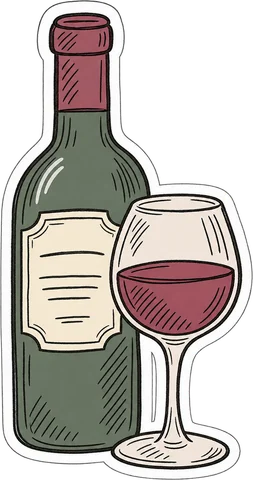
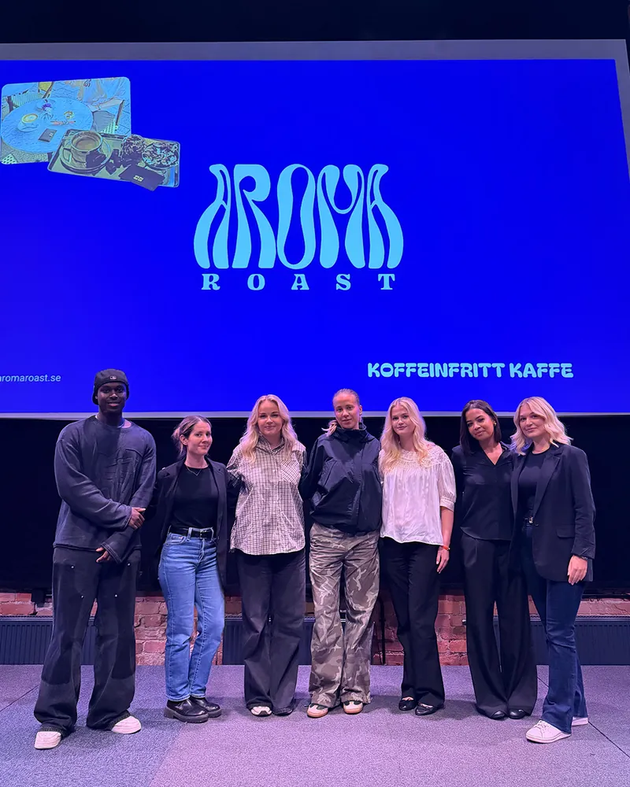
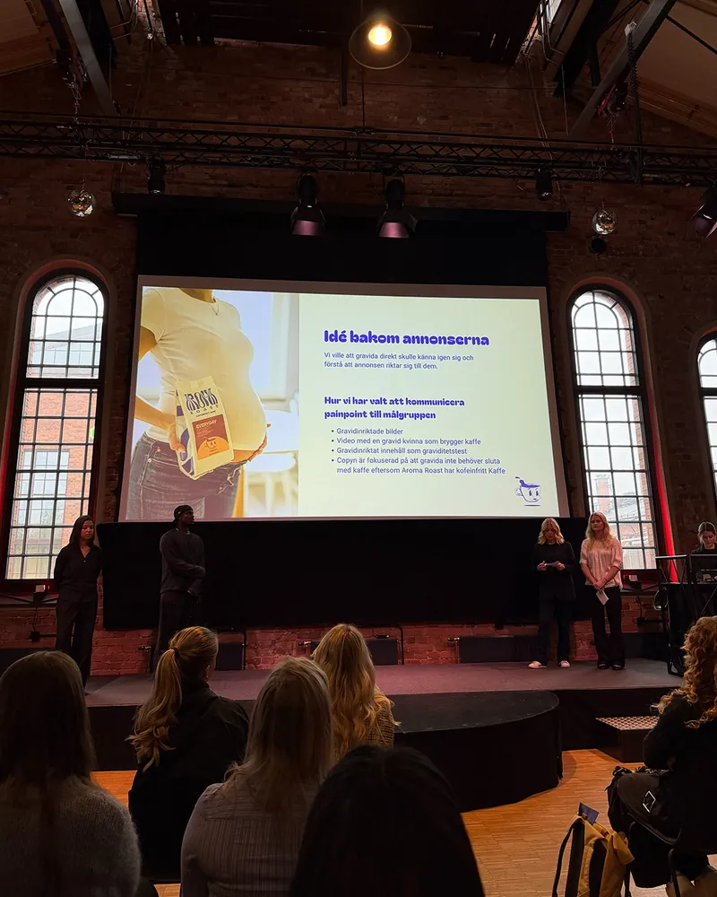
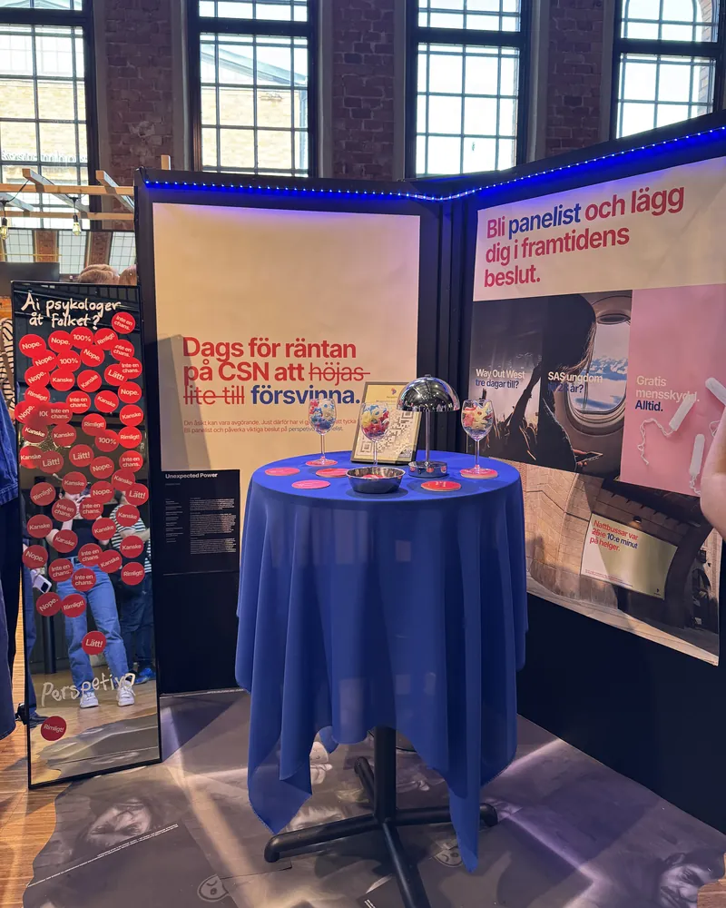
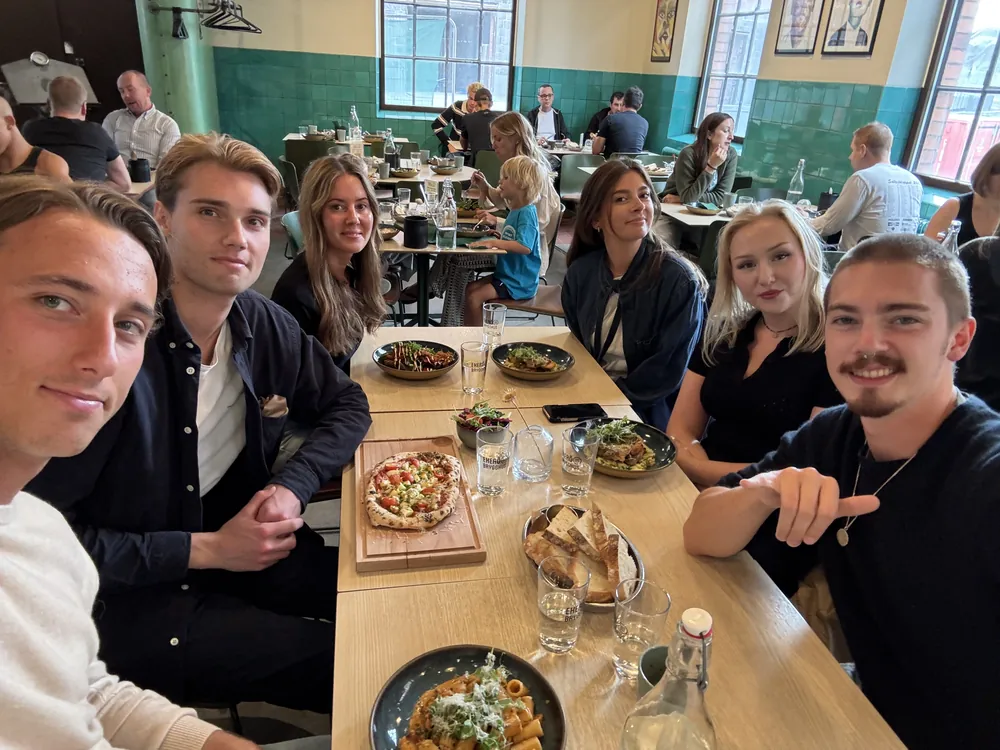
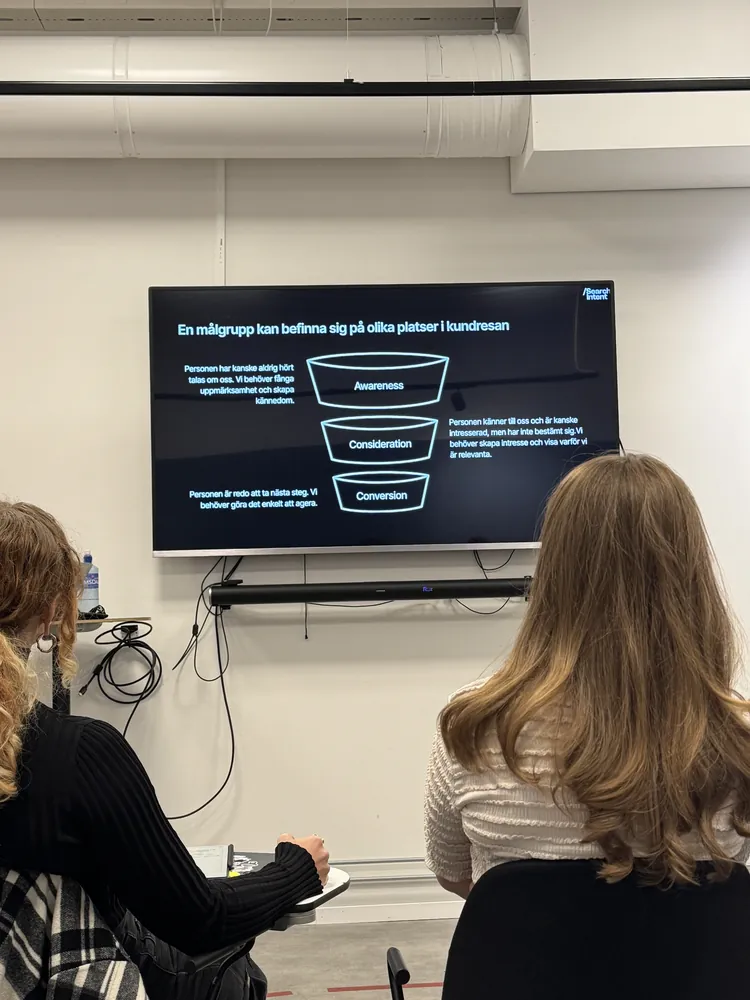

Eleonor Norrman
Jag är en noggrann och kreativ Growth Marketing-student på Berghs School of Communication. Har tidigare pluggat UX- och UI-design på Berghs.

API-demo
En liten webbapp som hämtar aktuellt väder i Stockholm från Open-Meteos API och föreslår ett vin som passar vädret.
VÄDER × VIN
Vilket vin blir
det i dag?
Låt vädret bestämma.



Min tid på Berghs




